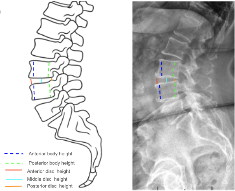

1) Description of Measurement
The Disc Height Index (DHI) is a normalized radiographic ratio that quantifies intervertebral-disc height relative to the adjacent vertebral body height. It provides a dimensionless, reproducible measure of disc space that minimizes magnification error and allows comparison across levels, individuals, or serial studies.
DHI is used to assess disc degeneration, postoperative disc-space restoration, and fusion maintenance. A reduced DHI indicates disc collapse or degenerative disc disease, while an increased value reflects restored or hyper-distracted disc height after surgery or instrumentation.
2) Instructions to Measure
3) Normal vs. Pathologic Ranges
4) Important References
Inoue N, Espinoza Orías AA, et al. Quantitative assessment of lumbar intervertebral disc height using a radiographic index: correlation with MRI and degeneration grade. Spine. 1999;24(8):768–773.
Kwon YM, Kang KW, et al. Disc height index as a predictor of disc degeneration after lumbar fusion. Eur Spine J. 2016;25(6):1886–1892.
Choi WS, Kim JS, Hur JW, et al. Changes in disc height and segmental angle after lumbar total disc replacement: a 10-year follow-up. Spine J. 2017;17(10):1576–1583.
Mimura M, Panjabi MM, Oxland TR, Cripton PA, Ito H. Disc degeneration affects the multidirectional flexibility of the lumbar spine. Spine. 1994;19(12):1371–1380.
Etebar S, Cahill DW. Risk factors for adjacent-segment failure following lumbar fixation with rigid instrumentation for degenerative instability. J Neurosurg Spine. 1999;90(2):163–169.
5) Other info....
DHI offers a magnification-independent method for evaluating disc-space maintenance over time.
It is particularly valuable for fusion constructs, artificial-disc replacements, and degenerative studies.
When used longitudinally, ≥ 10 % change in DHI is generally considered radiographically significant.
Always correlate with MRI for accurate assessment of hydration and internal disc morphology.
For multi-level analysis, compute DHI at each lumbar level (L1–S1) to map regional degeneration patterns.
In research settings, DHI can be averaged across levels to generate a “global lumbar DHI.”
EOS or digital PACS tools provide the most reproducible linear measurements for DHI determination.
In deformity or fusion surgery, maintaining physiologic DHI contributes to segmental motion preservation and reduced adjacent-segment degeneration.